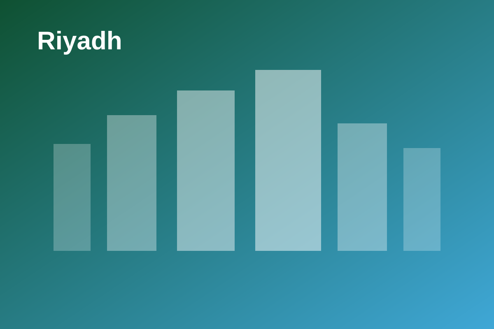
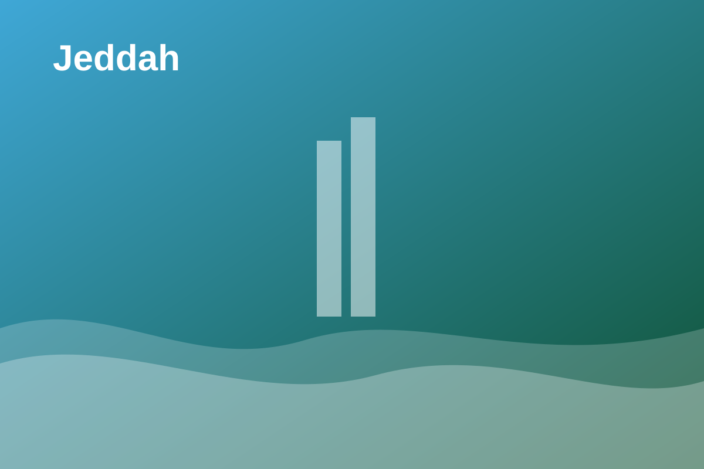

Destination Discovery
Browse Saudi destinations, attractions, categories, and city-based recommendations.
Graduation Project Showcase
This GitHub Pages site presents the Wajhati Saudiya university project. The original application is a Flask web app, so GitHub Pages hosts this static showcase, documentation, and report rather than the live backend.
Project Overview
Browse Saudi destinations, attractions, categories, and city-based recommendations.
Create itineraries using city, budget, trip duration, trip type, and personal interests.
Register accounts, save itineraries, keep favorites, and leave destination reviews.
Expose health, destination, review, and itinerary-generation endpoints for demonstration use.
Visual Theme


Documentation
The full report is published with this site so reviewers can read the project directly from GitHub Pages.
Read the reportImportant Note
GitHub Pages cannot run Flask, Python processes, or SQLite-backed authentication flows. If you want the full app online, the backend should be deployed to a platform such as Render, Railway, or PythonAnywhere.